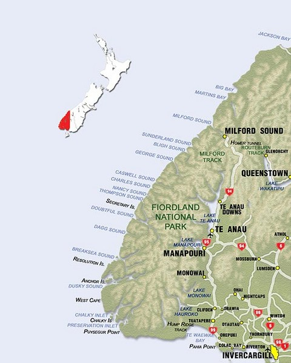

Fiordland countrywide Park is one of latest Zealand’s treasured natural icons and is the world over regarded as a part of the broader UNESCO international background website online, Te Wāhipounamu (area of the Greenstone). It's far domestic to glaciers, alpine levels and specific flowers and fauna that has been in existence considering the fact that New Zealand turned into a part of the supercontinent Gondwanaland. Fiordland National Park is located on the south-west corner of the South Island of New Zealand.
Fiordland country wide Park itself covers 1.2 million hectares of mountain, lake, fiord and rainforest environments and is run with the aid of the branch of Conservation. Human activity within Fiordland has been limited because of its hard and wild landscapes.
Early Māori visited Fiordland for looking, fishing and accumulating takiwai (a unique shape of new Zealand jade or pounamu). An awful lot later, european sealers and whalers took refuge in the fiords and built a handful of small settlements, those being New Zealand’s earliest eu settlements. However normal the sheer steepness of the terrain, the high-quality isolation, and the wettest climate in New Zealand deterred all but the hardiest from settling in the area
If there’s one thing Fiordland is most famous for, it’s water. Here, the beauty of the area is shaped by water - lakes, rivers, streams, waterfalls, lush rainforest, stunning fiords and water locked up as glaciers. The secret to enjoying your time here is to be prepared for Fiordland weather and be prepared for rain - at any time of the year. Of course you may strike a drought - two days or more without rain! Bring layers for clothing, sensible footwear and of course, a good raincoat.

you can find places to stay and enjoy life.
- Borland Nature Walk :-
- Borland Road to Monowai Hut Track :-
- Hollyford Track:-
- South Coast Track:-
- Holly ford Track:Hidden Falls Track:-
This is an smooth walking tune, supplying a loop track and self guiding brochure - a remarkable interest for households. The music is wheelchair handy until the bridge.From the Borland lodge head toward the Borland avenue gate, wherein you may find signs and symptoms for the begin of the stroll.The walk leads through gentle Fiordland wooded area with a selection of plant sorts, quite some small bush birds and a picturesque creek.

This tramping song is in a completely appealing area. The song leads from the Borland Saddle past Island Lake, the historical Clark Hut and Clark Hut to Monowai Hut on the northern stop of Lake Monowai.There are great openings for photography and fishing.You can go back the identical way, or pop out at Lake Monowai automobile park via way of means of combining with the Green Lake Track. There are windfalls at the track, so anticipate longer on foot times.

The Hollyford Track is a exceptional tramping journey for individuals who want to be a touch off the crushed song, however still, have a terrific song and huts to live in.Beginning most of the sheer rock partitions of the Darran Mountains in Fiordland National Park, the song follows the Hollyford River/Whakatipu Kā Tuka on its adventure to the ocean at Martins Bay, at the wild West Coast.With no alpine sections, this song is not often reduce off with the aid of using snow so that you can tramp it in any season relying on weather.

The first section, an easy, family-pleasant stroll to Port Craig School Hut, may be carried out as an in a single day ride with stunning coastal perspectives and a flavor of records.rom the Rarakau carpark, the song follows an antique street over numerous suspension bridges and beyond beachside baches. Passing the Hump Ridge Track Okaka Lodge turnoff, the song skirts numerous seashores and headlands earlier than arriving on the marvelous Blowholes Beach.Hectors dolphins are frequently visible all alongside this coastline (search for the round, ‘mickey mouse’ formed fin withinside the shallows).From right here the song climbs over some other headland to Breakneck Creek, in which it re-enters the woodland earlier than arriving on the anciental Port Craig School Hut (DOC) and Port Craig Lodge (private). Interpretive panels and a brief stroll across the webweb page might also additionally assist you study the wooden milling records of the area.This song may be mixed with Teal Bay to South Coast Track and Hump Ridge Track

This stroll is a part of the Hollyford Track, which begins offevolved on the give up of the Hollyford Road. For records approximately all sections of the tune, see Hollyford Track description.After crossing Humboldt Creek comply with the vintage avenue to the begin of the tune, which to begin with sidles alongside bluffs, with swampland to the left.Sections of raised board stroll pass regions vulnerable to flooding.Where Swamp Creek joins the Hollyford River/Whakatipu Kā Tuka the tune follows the river financial institution with occasional perspectives of the Darran Mountains.At Hidden Falls Creek the tune passes Sunshine Hut (private), and maintains upstream to the swingbridge. You can view the falls mins on from the bridge. Hidden Falls Hut (12 bunks) is reached 10 mins after crossing the bridge. You can see Mt Madeline from here.Return the identical way.This is a good, valley-primarily based totally day stroll for households and for whilst horrific climate prevents strolling in uncovered regions.To discover the Hollyford Road, flip off from the Milford Road (SH94) at Marian Corner, a couple of minutes closer to Milford Sound from The Divide. Marian Corner is ready 87 km alongside the Milford Road from Te Anau.Allow 2 hours to power from Te Anau to the give up of the Hollyford Road.

There are many places where your mind stops for the moment in seeing first time in your life.
you want to find more things obout Fiordland National Park.